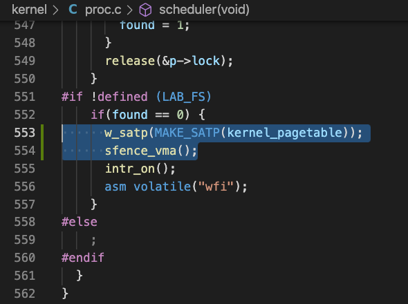

<!DOCTYPE html>
<html lang="en" >


<head>
  <meta charset="UTF-8">
  <link rel="apple-touch-icon" sizes="76x76" href="/img/favicon.png">
  <link rel="icon" type="image/png" href="/img/favicon.png">
  <meta name="viewport"
        content="width=device-width, initial-scale=1.0, maximum-scale=1.0, user-scalable=no, shrink-to-fit=no">
  <meta http-equiv="x-ua-compatible" content="ie=edge">
  
  <meta name="theme-color" content="black">
  <meta name="description" content="">
  <meta name="author" content="Chenlu Miao">
  <meta name="keywords" content="">
  <title>page tables [os lab3] - Explorer</title>

  <link  rel="stylesheet" href="https://cdn.staticfile.org/twitter-bootstrap/4.4.1/css/bootstrap.min.css" />


  <link  rel="stylesheet" href="https://cdn.staticfile.org/github-markdown-css/4.0.0/github-markdown.min.css" />
  <link  rel="stylesheet" href="/lib/hint/hint.min.css" />

  
    
    <link  rel="stylesheet" href="https://cdn.staticfile.org/highlight.js/10.0.0/styles/atom-one-dark.min.css" />
  

  
    <link  rel="stylesheet" href="https://cdn.staticfile.org/gitalk/1.6.2/gitalk.css" />
  


<!-- 主题依赖的图标库，不要自行修改 -->

<link rel="stylesheet" href="//at.alicdn.com/t/font_1749284_6peoq002giu.css">


<link rel="stylesheet" href="//at.alicdn.com/t/font_1736178_pjno9b9zyxs.css">


<link  rel="stylesheet" href="/css/main.css" />

<!-- 自定义样式保持在最底部 -->


  <script  src="/js/utils.js" ></script>
  <script  src="/js/color-schema.js" ></script>
<meta name="generator" content="Hexo 4.2.1"></head>


<body>
  <header style="height: 70vh;">
    <nav id="navbar" class="navbar fixed-top  navbar-expand-lg navbar-dark scrolling-navbar">
  <div class="container">
    <a class="navbar-brand"
       href="/">&nbsp;<strong>Explorer</strong>&nbsp;</a>

    <button id="navbar-toggler-btn" class="navbar-toggler" type="button" data-toggle="collapse"
            data-target="#navbarSupportedContent"
            aria-controls="navbarSupportedContent" aria-expanded="false" aria-label="Toggle navigation">
      <div class="animated-icon"><span></span><span></span><span></span></div>
    </button>

    <!-- Collapsible content -->
    <div class="collapse navbar-collapse" id="navbarSupportedContent">
      <ul class="navbar-nav ml-auto text-center">
        
          
          
          
          
            <li class="nav-item">
              <a class="nav-link" href="/">
                <i class="iconfont icon-home-fill"></i>
                Home
              </a>
            </li>
          
        
          
          
          
          
            <li class="nav-item">
              <a class="nav-link" href="/archives/">
                <i class="iconfont icon-archive-fill"></i>
                Archives
              </a>
            </li>
          
        
          
          
          
          
            <li class="nav-item">
              <a class="nav-link" href="/categories/">
                <i class="iconfont icon-category-fill"></i>
                Categories
              </a>
            </li>
          
        
          
          
          
          
            <li class="nav-item">
              <a class="nav-link" href="/tags/">
                <i class="iconfont icon-tags-fill"></i>
                Tags
              </a>
            </li>
          
        
          
          
          
          
            <li class="nav-item">
              <a class="nav-link" href="/about/">
                <i class="iconfont icon-user-fill"></i>
                About
              </a>
            </li>
          
        
        
          <li class="nav-item" id="search-btn">
            <a class="nav-link" data-toggle="modal" data-target="#modalSearch">&nbsp;<i
                class="iconfont icon-search"></i>&nbsp;</a>
          </li>
        
        
      </ul>
    </div>
  </div>
</nav>

    <div class="banner intro-2" id="background" parallax=true
         style="background: url('/img/default.jpg') no-repeat center center;
           background-size: cover;">
      <div class="full-bg-img">
        <div class="mask flex-center" style="background-color: rgba(0, 0, 0, 0.3)">
          <div class="container page-header text-center fade-in-up">
            <span class="h2" id="subtitle">
              
            </span>

            
              
  <div class="mt-3 post-meta">
    <i class="iconfont icon-date-fill" aria-hidden="true"></i>
    <time datetime="2020-12-19 13:22" pubdate>
      December 19, 2020 pm
    </time>
  </div>


<div class="mt-1">
  
    
    <span class="post-meta mr-2">
      <i class="iconfont icon-chart"></i>
      3.9k 字
    </span>
  

  
    
    <span class="post-meta mr-2">
      <i class="iconfont icon-clock-fill"></i>
      
      
      71
       分钟
    </span>
  

  
  
    
      <!-- LeanCloud 统计文章PV -->
      <span id="leancloud-post-views-container" class="post-meta" style="display: none">
        <i class="iconfont icon-eye" aria-hidden="true"></i>
        <span id="leancloud-post-views"></span> 次
      </span>
    
  
</div>

            
          </div>

          
        </div>
      </div>
    </div>
  </header>

  <main>
    
      

<div class="container-fluid">
  <div class="row">
    <div class="d-none d-lg-block col-lg-2"></div>
    <div class="col-lg-8 nopadding-md">
      <div class="container nopadding-md" id="board-ctn">
        <div class="py-5" id="board">
          <article class="post-content mx-auto" id="post">
            <!-- SEO header -->
            <h1 style="display: none">page tables [os lab3]</h1>
            
              <p class="note note-info">
                
                  本文最后更新于：December 27, 2020 pm
                
              </p>
            
            <div class="markdown-body" id="post-body">
              <h2 id="Print-a-page-table"><a href="#Print-a-page-table" class="headerlink" title="Print a page table"></a>Print a page table</h2><p>To help you learn about RISC-V page tables, and perhaps to aid future debugging, your first task is to write a function that prints the contents of a page table.</p>
<div class="note note-primary">
            <p>Define a function called <code>vmprint()</code>. It should take a <code>pagetable_t</code> argument, and print that pagetable in the format described below. Insert <code>if(p-&gt;pid==1) vmprint(p-&gt;pagetable)</code> in exec.c just before the <code>return argc</code>, to print the first process’s page table. You receive full credit for this assignment if you pass the <code>pte printout</code> test of <code>make grade</code>.</p>
          </div>
<p>Now when you start xv6 it should print output like this, describing the page table of the first process at the point when it has just finished <code>exec()</code>ing <code>init</code>:</p>
<div class="hljs"><pre><code class="hljs angelscript">page table <span class="hljs-number">0x0000000087f6e000</span>
.<span class="hljs-number">.0</span>: pte <span class="hljs-number">0x0000000021fda801</span> pa <span class="hljs-number">0x0000000087f6a000</span>
.. .<span class="hljs-number">.0</span>: pte <span class="hljs-number">0x0000000021fda401</span> pa <span class="hljs-number">0x0000000087f69000</span>
.. .. .<span class="hljs-number">.0</span>: pte <span class="hljs-number">0x0000000021fdac1f</span> pa <span class="hljs-number">0x0000000087f6b000</span>
.. .. .<span class="hljs-number">.1</span>: pte <span class="hljs-number">0x0000000021fda00f</span> pa <span class="hljs-number">0x0000000087f68000</span>
.. .. .<span class="hljs-number">.2</span>: pte <span class="hljs-number">0x0000000021fd9c1f</span> pa <span class="hljs-number">0x0000000087f67000</span>
.<span class="hljs-number">.255</span>: pte <span class="hljs-number">0x0000000021fdb401</span> pa <span class="hljs-number">0x0000000087f6d000</span>
.. .<span class="hljs-number">.511</span>: pte <span class="hljs-number">0x0000000021fdb001</span> pa <span class="hljs-number">0x0000000087f6c000</span>
.. .. .<span class="hljs-number">.510</span>: pte <span class="hljs-number">0x0000000021fdd807</span> pa <span class="hljs-number">0x0000000087f76000</span>
.. .. .<span class="hljs-number">.511</span>: pte <span class="hljs-number">0x0000000020001c0b</span> pa <span class="hljs-number">0x0000000080007000</span></code></pre></div>
<p>The first line displays the argument to <code>vmprint</code>. After that there is a line for each PTE, including PTEs that refer to page-table pages deeper in the tree. Each PTE line is indented by a number of <code>&quot; ..&quot;</code> that indicates its depth in the tree. Each PTE line shows the PTE index in its page-table page, the pte bits, and the physical address extracted from the PTE. Don’t print PTEs that are not valid. In the above example, the top-level page-table page has mappings for entries 0 and 255. The next level down for entry 0 has only index 0 mapped, and the bottom-level for that index 0 has entries 0, 1, and 2 mapped.</p>
<p>Your code might emit different physical addresses than those shown above. The number of entries and the virtual addresses should be the same.</p>
<h2 id="Some-hints"><a href="#Some-hints" class="headerlink" title="Some hints"></a>Some hints</h2><div class="note note-success">
            <ul><li>You can put <code>vmprint()</code> in <code>kernel/vm.c</code>.</li></ul>
          </div>
<div class="note note-success">
            <ul><li>Use the macros at the end of the file <code>kernel/riscv.h</code>.</li></ul>
          </div>
<div class="note note-success">
            <ul><li>The function <code>freewalk</code> may be inspirational.</li></ul>
          </div>
<p>这个函数展示了如何去recursively访问page table</p>
<div class="hljs"><pre><code class="hljs c"><span class="hljs-keyword">void</span>
freewalk(<span class="hljs-keyword">pagetable_t</span> pagetable)
&#123;
  <span class="hljs-comment">// there are 2^9 = 512 PTEs in a page table.</span>
  <span class="hljs-keyword">for</span>(<span class="hljs-keyword">int</span> i = <span class="hljs-number">0</span>; i &lt; <span class="hljs-number">512</span>; i++)&#123;
    <span class="hljs-keyword">pte_t</span> pte = pagetable[i];
    <span class="hljs-keyword">if</span>((pte &amp; PTE_V) &amp;&amp; (pte &amp; (PTE_R|PTE_W|PTE_X)) == <span class="hljs-number">0</span>)&#123;
      <span class="hljs-comment">// this PTE points to a lower-level page table.</span>
      uint64 child = PTE2PA(pte);
      freewalk((<span class="hljs-keyword">pagetable_t</span>)child);
      pagetable[i] = <span class="hljs-number">0</span>;
    &#125; <span class="hljs-keyword">else</span> <span class="hljs-keyword">if</span>(pte &amp; PTE_V)&#123;
      panic(<span class="hljs-string">"freewalk: leaf"</span>);
    &#125;
  &#125;
  kfree((<span class="hljs-keyword">void</span>*)pagetable);
&#125;</code></pre></div>
<div class="note note-success">
            <ul><li>Define the prototype for <code>vmprint</code> in <code>kernel/defs.h</code> so that you can call it from <code>exec.c</code>.</li></ul>
          </div>
<p></p>
<div class="note note-success">
            <ul><li>Use <code>%p</code> in your printf calls to print out full 64-bit hex PTEs and addresses as shown in the example.</li></ul>
          </div>
<h2 id="Final-Code"><a href="#Final-Code" class="headerlink" title="Final Code"></a>Final Code</h2><p>想法比较自然，写一个递归函数<code>vmprintRecursive</code>去深度遍历page table, 因为打印<code>..</code>的原因，还提供了一个函数参数level</p>
<p>这个深度遍历函数的逻辑是: 从0-511去查看page table entry</p>
<p>如果查到了pte并且他是valid的, 就通过<code>PTE2PA</code>获取指向的physical address。这个时候打印题目所要求的内容</p>
<p>更进一步，如果这个pte不是PTE_R, PTE_W, PTE_X没有被置位，说明这个pte指向了下一层page table的physical address, 递归去访问。</p>
<div class="hljs"><pre><code class="hljs c"><span class="hljs-function"><span class="hljs-keyword">void</span> <span class="hljs-title">vmprintRecursive</span><span class="hljs-params">(<span class="hljs-keyword">pagetable_t</span> pagetable, <span class="hljs-keyword">int</span> level)</span> </span>&#123;
  <span class="hljs-keyword">for</span>(<span class="hljs-keyword">int</span> i = <span class="hljs-number">0</span>; i &lt; <span class="hljs-number">512</span>; i++)&#123;
    <span class="hljs-keyword">pte_t</span> pte = pagetable[i];
    <span class="hljs-keyword">if</span>(pte &amp; PTE_V) &#123;
      uint64 child = PTE2PA(pte);
      <span class="hljs-keyword">for</span>(<span class="hljs-keyword">int</span> i = <span class="hljs-number">0</span>; i &lt;= level; i++) &#123;
        <span class="hljs-built_in">printf</span>(<span class="hljs-string">".."</span>);
        <span class="hljs-keyword">if</span>(i != level) <span class="hljs-built_in">printf</span>(<span class="hljs-string">" "</span>);
      &#125;

      <span class="hljs-built_in">printf</span>(<span class="hljs-string">"%d: pte %p pa %p\n"</span>, i, pte, child);
      <span class="hljs-keyword">if</span>((pte &amp; (PTE_R | PTE_W | PTE_X)) == <span class="hljs-number">0</span>)
          vmprintRecursive((<span class="hljs-keyword">pagetable_t</span>)child, level + <span class="hljs-number">1</span>);
    &#125; 
  &#125;
&#125;

<span class="hljs-keyword">void</span>
vmprint(<span class="hljs-keyword">pagetable_t</span> pagetable) &#123;
  <span class="hljs-built_in">printf</span>(<span class="hljs-string">"page table %p\n"</span>, pagetable);
  vmprintRecursive(pagetable, <span class="hljs-number">0</span>);
&#125;</code></pre></div>
<h1 id="A-kernel-page-table-per-process"><a href="#A-kernel-page-table-per-process" class="headerlink" title="A kernel page table per process"></a>A kernel page table per process</h1><div class="note note-primary">
            <p>Xv6 has a single kernel page table that’s used whenever it executes in the kernel. The kernel page table is a direct mapping to physical addresses, so that kernel virtual address <em>x</em> maps to physical address <em>x</em>. Xv6 also has a separate page table for each process’s user address space, containing only mappings for that process’s user memory, starting at virtual address zero. Because the kernel page table doesn’t contain these mappings, user addresses are not valid in the kernel. Thus, when the kernel needs to use a user pointer passed in a system call (e.g., the buffer pointer passed to <code>write()</code>), the kernel must first translate the pointer to a physical address. The goal of this section and the next is to allow the kernel to directly dereference user pointers.</p><p>Xv6 has a single kernel page table that’s used whenever it executes in the kernel. The kernel page table is a direct mapping to physical addresses, so that kernel virtual address <em>x</em> maps to physical address <em>x</em>. Xv6 also has a separate page table for each process’s user address space, containing only mappings for that process’s user memory, starting at virtual address zero. Because the kernel page table doesn’t contain these mappings, user addresses are not valid in the kernel. Thus, when the kernel needs to use a user pointer passed in a system call (e.g., the buffer pointer passed to <code>write()</code>), the kernel must first translate the pointer to a physical address. The goal of this section and the next is to allow the kernel to directly dereference user pointers.</p>
          </div>
<p>这个实验中修改的部分有<code>vm.c, proc.h, proc.c, defs.h</code></p>
<h2 id="Some-hints-1"><a href="#Some-hints-1" class="headerlink" title="Some hints"></a>Some hints</h2><div class="note note-success">
            <ul><li>Add a field to <code>struct proc</code> for the process’s kernel page table.</li></ul>
          </div>
<p></p>
<div class="note note-success">
            <ul><li>A reasonable way to produce a kernel page table for a new process is to implement a modified version of <code>kvminit</code> that makes a new page table instead of modifying <code>kernel_pagetable</code>. You’ll want to call this function from <code>allocproc</code>.</li></ul>
          </div>
<p><code>allocproc</code>函数分配并且初始化struct proc, 因为我们在struct proc中增加了kernel page table, 因此需要在这里进行初始化。</p>
<p>在<code>kernel/vm.c</code>中<code>kvminit</code>函数创建了direct-map kernel page table。在<code>kernel/proc.c</code>中仿照<code>kvminit</code>函数新写一个<code>proc_kpagetable</code>函数来创建process中的kernel page table</p>
<div class="hljs"><pre><code class="hljs c"><span class="hljs-keyword">pagetable_t</span>
proc_kpagetable(struct proc *p)
&#123;
  <span class="hljs-keyword">pagetable_t</span> kpagetable;

  kpagetable = uvmcreate();
  <span class="hljs-keyword">if</span> (kpagetable == <span class="hljs-number">0</span>)
    <span class="hljs-keyword">return</span> <span class="hljs-number">0</span>;
  
  <span class="hljs-comment">// Fill in the process's kernel page table, the same as kernel_pagetable</span>
  ukvmmap(kpagetable, UART0, UART0, PGSIZE, PTE_R | PTE_W);
  ukvmmap(kpagetable, VIRTIO0, VIRTIO0, PGSIZE, PTE_R | PTE_W);
  ukvmmap(kpagetable, PLIC, PLIC, <span class="hljs-number">0x400000</span>, PTE_R | PTE_W);
  ukvmmap(kpagetable, KERNBASE, KERNBASE, (uint64)etext-KERNBASE, PTE_R | PTE_X);
  ukvmmap(kpagetable, (uint64)etext, (uint64)etext, PHYSTOP-(uint64)etext, PTE_R | PTE_W);
  ukvmmap(kpagetable, TRAMPOLINE, (uint64)trampoline, PGSIZE, PTE_R | PTE_X);
  ukvmmap(kpagetable, TRAPFRAME, (uint64)(p-&gt;trapframe), PGSIZE, PTE_R | PTE_W);
  <span class="hljs-keyword">return</span> kpagetable;
&#125;</code></pre></div>
<p>在<code>kernel/proc.c</code>的<code>allocproc</code>函数中调用<code>proc_kpagetable</code>函数</p>
<div class="hljs"><pre><code class="hljs c"><span class="hljs-comment">// An empty user page table.</span>
p-&gt;pagetable = proc_pagetable(p);
<span class="hljs-keyword">if</span>(p-&gt;pagetable == <span class="hljs-number">0</span>)&#123;
  freeproc(p);
  <span class="hljs-built_in">release</span>(&amp;p-&gt;lock);
  <span class="hljs-keyword">return</span> <span class="hljs-number">0</span>;
&#125;

p-&gt;kpagetable = proc_kpagetable(p);
<span class="hljs-keyword">if</span>(p-&gt;kpagetable == <span class="hljs-number">0</span>)&#123;
  freeproc(p);
  <span class="hljs-built_in">release</span>(&amp;p-&gt;lock);
  <span class="hljs-keyword">return</span> <span class="hljs-number">0</span>;
&#125;</code></pre></div>
<div class="note note-success">
            <ul><li>Make sure that each process’s kernel page table has a mapping for that process’s kernel stack. In unmodified xv6, all the kernel stacks are set up in <code>procinit</code>. You will need to move some or all of this functionality to <code>allocproc</code>.</li></ul>
          </div>
<p>修改<code>kernel/proc.c</code>中的<code>procinit</code>函数, 注释掉分配kernel stack的部分</p>
<div class="hljs"><pre><code class="hljs c"><span class="hljs-keyword">void</span>
procinit(<span class="hljs-keyword">void</span>)
&#123;
  <span class="hljs-class"><span class="hljs-keyword">struct</span> <span class="hljs-title">proc</span> *<span class="hljs-title">p</span>;</span>
  
  initlock(&amp;pid_lock, <span class="hljs-string">"nextpid"</span>);
  <span class="hljs-keyword">for</span>(p = proc; p &lt; &amp;proc[NPROC]; p++) &#123;
      initlock(&amp;p-&gt;lock, <span class="hljs-string">"proc"</span>);
      <span class="hljs-comment">// Allocate a page for the process's kernel stack.</span>
      <span class="hljs-comment">// Map it high in memory, followed by an invalid</span>
      <span class="hljs-comment">// guard page.</span>
      <span class="hljs-comment">//char *pa = kalloc();</span>
      <span class="hljs-comment">//if(pa == 0)</span>
      <span class="hljs-comment">//    panic("kalloc");</span>
      <span class="hljs-comment">//uint64 va = KSTACK((int) (p - proc));</span>
      <span class="hljs-comment">//kvmmap(p-&gt;kpagetable, va, (uint64)pa, PGSIZE, PTE_R | PTE_W);</span>
      <span class="hljs-comment">//p-&gt;kstack = va;</span>
  &#125;
  kvminithart();
&#125;</code></pre></div>
<p>将这部分代码移动到<code>allocproc</code>中</p>
<div class="hljs"><pre><code class="hljs c"><span class="hljs-comment">// Allocate a page for the process's kernel stack.</span>
<span class="hljs-comment">// Map it high in memory, followed by an invalid</span>
<span class="hljs-comment">// guard page.</span>
<span class="hljs-keyword">char</span> *pa = kalloc();
<span class="hljs-keyword">if</span>(pa == <span class="hljs-number">0</span>)
  panic(<span class="hljs-string">"kalloc"</span>);
uint64 va = KSTACK((<span class="hljs-keyword">int</span>) (p - proc));
ukvmmap(p-&gt;kpagetable, va, (uint64)pa, PGSIZE, PTE_R | PTE_W);
p-&gt;kstack = va;</code></pre></div>
<p>注意: 这里将<code>kvmmap</code>函数改成了<code>ukvmmap</code>函数, <code>kvmmap</code>函数默认操作<code>kernel_pagetable</code>, 而这里我们想要在process的<code>kpagetable</code>中进行映射， 因此增加了一个<code>ukvmmap</code>函数，多提供了一个<code>pagetable</code>的参数</p>
<div class="hljs"><pre><code class="hljs c"><span class="hljs-comment">// add a mapping to the kernel page table.</span>
<span class="hljs-comment">// only used when booting.</span>
<span class="hljs-comment">// does not flush TLB or enable paging.</span>
<span class="hljs-keyword">void</span>
kvmmap(uint64 va, uint64 pa, uint64 sz, <span class="hljs-keyword">int</span> perm)
&#123;
  <span class="hljs-keyword">if</span>(mappages(kernel_pagetable, va, sz, pa, perm) != <span class="hljs-number">0</span>)
    panic(<span class="hljs-string">"kvmmap"</span>);
&#125;

<span class="hljs-keyword">void</span>
ukvmmap(<span class="hljs-keyword">pagetable_t</span> kpagetable, uint64 va, uint64 pa, uint64 sz, <span class="hljs-keyword">int</span> perm)
&#123;
  <span class="hljs-keyword">if</span>(mappages(kpagetable, va, sz, pa, perm) != <span class="hljs-number">0</span>)
    panic(<span class="hljs-string">"ukvmmap"</span>);
&#125;</code></pre></div>
<div class="note note-success">
            <ul><li>Modify <code>scheduler()</code> to load the process’s kernel page table into the core’s <code>satp</code> register (see <code>kvminithart</code> for inspiration). Don’t forget to call <code>sfence_vma()</code> after calling <code>w_satp()</code>.</li></ul>
          </div>
<p></p>
<div class="note note-success">
            <ul><li><code>scheduler()</code> should use <code>kernel_pagetable</code> when no process is running.</li></ul>
          </div>
<p></p>
<div class="note note-warning">
            <p>注意, 在<code>kernel/vm.c</code>中，<code>kvmpa</code>函数会在进程执行期间调用，这个函数不应调用全局kernel page table, 而应调用进程对应的kernel page table</p>
          </div>
<div class="hljs"><pre><code class="hljs c"><span class="hljs-comment">// translate a kernel virtual address to</span>
<span class="hljs-comment">// a physical address. only needed for</span>
<span class="hljs-comment">// addresses on the stack.</span>
<span class="hljs-comment">// assumes va is page aligned.</span>
uint64
kvmpa(uint64 va)
&#123;
  uint64 off = va % PGSIZE;
  <span class="hljs-keyword">pte_t</span> *pte;
  uint64 pa;
  
  pte = walk(myproc()-&gt;kpagetable, va, <span class="hljs-number">0</span>);
  <span class="hljs-keyword">if</span>(pte == <span class="hljs-number">0</span>)
    panic(<span class="hljs-string">"kvmpa"</span>);
  <span class="hljs-keyword">if</span>((*pte &amp; PTE_V) == <span class="hljs-number">0</span>)
    panic(<span class="hljs-string">"kvmpa"</span>);
  pa = PTE2PA(*pte);
  <span class="hljs-keyword">return</span> pa+off;
&#125;</code></pre></div>
<p>为了使用<code>myproc()</code>函数 ，还需要在头文件中</p>
<div class="hljs"><pre><code class="hljs c"><span class="hljs-meta">#<span class="hljs-meta-keyword">include</span> <span class="hljs-meta-string">"spinlock.h"</span></span>
<span class="hljs-meta">#<span class="hljs-meta-keyword">include</span> <span class="hljs-meta-string">"proc.h"</span></span></code></pre></div>
<div class="note note-success">
            <ul><li>Free a process’s kernel page table in <code>freeproc</code>.</li><li>You’ll need a way to free a page table without also freeing the leaf physical memory pages.</li></ul>
          </div>
<p>修改<code>kernel/proc.c</code>中的<code>freeproc</code>函数。free kernel stack, free kernel page table</p>
<ul>
<li>free kstack是通过kpage table去查找kstack对应的物理地址，然后free</li>
<li>free kernel page table是通过<code>kernel/proc.c</code>中一个新写的函数<code>proc_freekpagetable</code>来实现的。这个函数借鉴<code>kernel/vm.c</code>中的<code>freewalk</code>函数 。注意这里只free kernel page table, 不能把page table指向的地址free掉，也就是不能free leaves</li>
</ul>
<div class="hljs"><pre><code class="hljs c"><span class="hljs-keyword">void</span>
proc_freekpagetable(<span class="hljs-keyword">pagetable_t</span> kpagetable)
&#123;
  <span class="hljs-comment">// there are 2^9 = 512 PTEs in a page table.</span>
  <span class="hljs-keyword">for</span>(<span class="hljs-keyword">int</span> i = <span class="hljs-number">0</span>; i &lt; <span class="hljs-number">512</span>; i++) &#123;
    <span class="hljs-keyword">pte_t</span> pte = kpagetable[i];
    <span class="hljs-keyword">if</span>(pte &amp; PTE_V) &#123;
      kpagetable[i] = <span class="hljs-number">0</span>;

      <span class="hljs-keyword">if</span>((pte &amp; (PTE_R | PTE_W | PTE_X)) == <span class="hljs-number">0</span>) &#123;
        uint64 child = PTE2PA(pte);
        proc_freekpagetable((<span class="hljs-keyword">pagetable_t</span>)child);
      &#125;
    &#125;
  &#125;
  kfree((<span class="hljs-keyword">void</span>*)kpagetable);
&#125;</code></pre></div>
<div class="hljs"><pre><code class="hljs c"><span class="hljs-comment">// free a proc structure and the data hanging from it,</span>
<span class="hljs-comment">// including user pages.</span>
<span class="hljs-comment">// p-&gt;lock must be held.</span>
<span class="hljs-keyword">static</span> <span class="hljs-keyword">void</span>
freeproc(struct proc *p)
&#123;
  <span class="hljs-keyword">if</span>(p-&gt;trapframe)
    kfree((<span class="hljs-keyword">void</span>*)p-&gt;trapframe);
  p-&gt;trapframe = <span class="hljs-number">0</span>;
  <span class="hljs-comment">// free kernel stack</span>
  <span class="hljs-keyword">if</span>(p-&gt;kstack) &#123;
    <span class="hljs-keyword">pte_t</span>* pte = walk(p-&gt;kpagetable, p-&gt;kstack, <span class="hljs-number">0</span>);
    <span class="hljs-keyword">if</span> (pte == <span class="hljs-number">0</span>)
      panic(<span class="hljs-string">"freeproc: walk"</span>);
    kfree((<span class="hljs-keyword">void</span>*)PTE2PA(*pte));
  &#125;
  p-&gt;kstack = <span class="hljs-number">0</span>;

  <span class="hljs-keyword">if</span>(p-&gt;pagetable)
    proc_freepagetable(p-&gt;pagetable, p-&gt;sz);

  <span class="hljs-keyword">if</span>(p-&gt;kpagetable)
    proc_freekpagetable(p-&gt;kpagetable);
  p-&gt;pagetable = <span class="hljs-number">0</span>;
  p-&gt;kpagetable = <span class="hljs-number">0</span>;
  p-&gt;sz = <span class="hljs-number">0</span>;
  p-&gt;pid = <span class="hljs-number">0</span>;
  p-&gt;parent = <span class="hljs-number">0</span>;
  p-&gt;name[<span class="hljs-number">0</span>] = <span class="hljs-number">0</span>;
  p-&gt;chan = <span class="hljs-number">0</span>;
  p-&gt;killed = <span class="hljs-number">0</span>;
  p-&gt;xstate = <span class="hljs-number">0</span>;
  p-&gt;state = UNUSED;
&#125;</code></pre></div>
<p>注意这里要先free kstack。如果先free pagetable, 再free kstack, 则会出现error</p>
<div class="note note-success">
            <ul><li><code>vmprint</code> may come in handy to debug page tables.</li></ul>
          </div>
<div class="note note-success">
            <ul><li>It’s OK to modify xv6 functions or add new functions; you’ll probably need to do this in at least <code>kernel/vm.c</code> and <code>kernel/proc.c</code>. (But, don’t modify <code>kernel/vmcopyin.c</code>, <code>kernel/stats.c</code>, <code>user/usertests.c</code>, and <code>user/stats.c</code>.)</li></ul>
          </div>
<div class="note note-success">
            <ul><li>A missing page table mapping will likely cause the kernel to encounter a page fault. It will print an error that includes <code>sepc=0x00000000XXXXXXXX</code>. You can find out where the fault occurred by searching for <code>XXXXXXXX</code> in <code>kernel/kernel.asm</code>.</li></ul>
          </div>
<h2 id="Final-Code-1"><a href="#Final-Code-1" class="headerlink" title="Final Code"></a>Final Code</h2><ul>
<li>在<code>kernel/defs.h</code>中补上一些函数的声明</li>
</ul>
<div class="group-image-container"><div class="group-image-row"><div class="group-image-wrap"></div><div class="group-image-wrap"></div></div></div>
<ul>
<li><code>kernel/proc.h</code></li>
</ul>
<div class="hljs"><pre><code class="hljs c"><span class="hljs-class"><span class="hljs-keyword">struct</span> <span class="hljs-title">proc</span> &#123;</span>
  <span class="hljs-class"><span class="hljs-keyword">struct</span> <span class="hljs-title">spinlock</span> <span class="hljs-title">lock</span>;</span>

  <span class="hljs-comment">// p-&gt;lock must be held when using these:</span>
  <span class="hljs-keyword">enum</span> procstate state;        <span class="hljs-comment">// Process state</span>
  <span class="hljs-class"><span class="hljs-keyword">struct</span> <span class="hljs-title">proc</span> *<span class="hljs-title">parent</span>;</span>         <span class="hljs-comment">// Parent process</span>
  <span class="hljs-keyword">void</span> *chan;                  <span class="hljs-comment">// If non-zero, sleeping on chan</span>
  <span class="hljs-keyword">int</span> killed;                  <span class="hljs-comment">// If non-zero, have been killed</span>
  <span class="hljs-keyword">int</span> xstate;                  <span class="hljs-comment">// Exit status to be returned to parent's wait</span>
  <span class="hljs-keyword">int</span> pid;                     <span class="hljs-comment">// Process ID</span>

  <span class="hljs-comment">// these are private to the process, so p-&gt;lock need not be held.</span>
  uint64 kstack;               <span class="hljs-comment">// Virtual address of kernel stack</span>
  uint64 sz;                   <span class="hljs-comment">// Size of process memory (bytes)</span>
  <span class="hljs-keyword">pagetable_t</span> kpagetable;      <span class="hljs-comment">// Kernel page table</span>
  <span class="hljs-keyword">pagetable_t</span> pagetable;       <span class="hljs-comment">// User page table</span>
  <span class="hljs-class"><span class="hljs-keyword">struct</span> <span class="hljs-title">trapframe</span> *<span class="hljs-title">trapframe</span>;</span> <span class="hljs-comment">// data page for trampoline.S</span>
  <span class="hljs-class"><span class="hljs-keyword">struct</span> <span class="hljs-title">context</span> <span class="hljs-title">context</span>;</span>      <span class="hljs-comment">// swtch() here to run process</span>
  <span class="hljs-class"><span class="hljs-keyword">struct</span> <span class="hljs-title">file</span> *<span class="hljs-title">ofile</span>[<span class="hljs-title">NOFILE</span>];</span>  <span class="hljs-comment">// Open files</span>
  <span class="hljs-class"><span class="hljs-keyword">struct</span> <span class="hljs-title">inode</span> *<span class="hljs-title">cwd</span>;</span>           <span class="hljs-comment">// Current directory</span>
  <span class="hljs-keyword">char</span> name[<span class="hljs-number">16</span>];               <span class="hljs-comment">// Process name (debugging)</span>
&#125;;</code></pre></div>
<ul>
<li><code>kernel/vm.c</code></li>
</ul>
<div class="hljs"><pre><code class="hljs c"><span class="hljs-meta">#<span class="hljs-meta-keyword">include</span> <span class="hljs-meta-string">"spinlock.h"</span></span>
<span class="hljs-meta">#<span class="hljs-meta-keyword">include</span> <span class="hljs-meta-string">"proc.h"</span></span></code></pre></div>
<div class="hljs"><pre><code class="hljs c"><span class="hljs-keyword">void</span>
ukvmmap(<span class="hljs-keyword">pagetable_t</span> kpagetable, uint64 va, uint64 pa, uint64 sz, <span class="hljs-keyword">int</span> perm)
&#123;
  <span class="hljs-keyword">if</span>(mappages(kpagetable, va, sz, pa, perm) != <span class="hljs-number">0</span>)
    panic(<span class="hljs-string">"ukvmmap"</span>);
&#125;</code></pre></div>
<div class="hljs"><pre><code class="hljs c">uint64
kvmpa(uint64 va)
&#123;
  uint64 off = va % PGSIZE;
  <span class="hljs-keyword">pte_t</span> *pte;
  uint64 pa;
  
  pte = walk(myproc()-&gt;kpagetable, va, <span class="hljs-number">0</span>);
  <span class="hljs-keyword">if</span>(pte == <span class="hljs-number">0</span>)
    panic(<span class="hljs-string">"kvmpa"</span>);
  <span class="hljs-keyword">if</span>((*pte &amp; PTE_V) == <span class="hljs-number">0</span>)
    panic(<span class="hljs-string">"kvmpa"</span>);
  pa = PTE2PA(*pte);
  <span class="hljs-keyword">return</span> pa+off;
&#125;</code></pre></div>
<ul>
<li><code>kernel/proc.c</code></li>
</ul>
<div class="hljs"><pre><code class="hljs c"><span class="hljs-keyword">extern</span> <span class="hljs-keyword">char</span> etext[];  <span class="hljs-comment">// kernel.ld sets this to end of kernel code.</span>
<span class="hljs-keyword">extern</span> <span class="hljs-keyword">pagetable_t</span> kernel_pagetable;</code></pre></div>
<div class="hljs"><pre><code class="hljs c"><span class="hljs-keyword">void</span>
procinit(<span class="hljs-keyword">void</span>)
&#123;
  <span class="hljs-class"><span class="hljs-keyword">struct</span> <span class="hljs-title">proc</span> *<span class="hljs-title">p</span>;</span>
  
  initlock(&amp;pid_lock, <span class="hljs-string">"nextpid"</span>);
  <span class="hljs-keyword">for</span>(p = proc; p &lt; &amp;proc[NPROC]; p++) &#123;
      initlock(&amp;p-&gt;lock, <span class="hljs-string">"proc"</span>);
  &#125;
  kvminithart();
&#125;</code></pre></div>
<div class="hljs"><pre><code class="hljs c"><span class="hljs-keyword">static</span> <span class="hljs-class"><span class="hljs-keyword">struct</span> <span class="hljs-title">proc</span>*</span>
<span class="hljs-class"><span class="hljs-title">allocproc</span>(<span class="hljs-title">void</span>)</span>
<span class="hljs-class">&#123;</span>
  <span class="hljs-class"><span class="hljs-keyword">struct</span> <span class="hljs-title">proc</span> *<span class="hljs-title">p</span>;</span>

  <span class="hljs-keyword">for</span>(p = proc; p &lt; &amp;proc[NPROC]; p++) &#123;
    acquire(&amp;p-&gt;lock);
    <span class="hljs-keyword">if</span>(p-&gt;state == UNUSED) &#123;
      <span class="hljs-keyword">goto</span> found;
    &#125; <span class="hljs-keyword">else</span> &#123;
      <span class="hljs-built_in">release</span>(&amp;p-&gt;lock);
    &#125;
  &#125;
  <span class="hljs-keyword">return</span> <span class="hljs-number">0</span>;

found:
  p-&gt;pid = allocpid();

  <span class="hljs-comment">// Allocate a trapframe page.</span>
  <span class="hljs-keyword">if</span>((p-&gt;trapframe = (struct trapframe *)kalloc()) == <span class="hljs-number">0</span>)&#123;
    <span class="hljs-built_in">release</span>(&amp;p-&gt;lock);
    <span class="hljs-keyword">return</span> <span class="hljs-number">0</span>;
  &#125;

  <span class="hljs-comment">// An empty user page table.</span>
  p-&gt;pagetable = proc_pagetable(p);
  <span class="hljs-keyword">if</span>(p-&gt;pagetable == <span class="hljs-number">0</span>)&#123;
    freeproc(p);
    <span class="hljs-built_in">release</span>(&amp;p-&gt;lock);
    <span class="hljs-keyword">return</span> <span class="hljs-number">0</span>;
  &#125;

  p-&gt;kpagetable = proc_kpagetable(p);
  <span class="hljs-keyword">if</span>(p-&gt;kpagetable == <span class="hljs-number">0</span>)&#123;
    freeproc(p);
    <span class="hljs-built_in">release</span>(&amp;p-&gt;lock);
    <span class="hljs-keyword">return</span> <span class="hljs-number">0</span>;
  &#125;


  <span class="hljs-comment">// Allocate a page for the process's kernel stack.</span>
  <span class="hljs-comment">// Map it high in memory, followed by an invalid</span>
  <span class="hljs-comment">// guard page.</span>
  <span class="hljs-keyword">char</span> *pa = kalloc();
  <span class="hljs-keyword">if</span>(pa == <span class="hljs-number">0</span>)
    panic(<span class="hljs-string">"kalloc"</span>);
  uint64 va = KSTACK((<span class="hljs-keyword">int</span>) (p - proc));
  ukvmmap(p-&gt;kpagetable, va, (uint64)pa, PGSIZE, PTE_R | PTE_W);
  p-&gt;kstack = va;

  <span class="hljs-comment">// Set up new context to start executing at forkret,</span>
  <span class="hljs-comment">// which returns to user space.</span>
  <span class="hljs-built_in">memset</span>(&amp;p-&gt;context, <span class="hljs-number">0</span>, <span class="hljs-keyword">sizeof</span>(p-&gt;context));
  p-&gt;context.ra = (uint64)forkret;
  p-&gt;context.sp = p-&gt;kstack + PGSIZE;

  <span class="hljs-keyword">return</span> p;
&#125;</code></pre></div>
<div class="hljs"><pre><code class="hljs c"><span class="hljs-keyword">static</span> <span class="hljs-keyword">void</span>
freeproc(struct proc *p)
&#123;
  <span class="hljs-keyword">if</span>(p-&gt;trapframe)
    kfree((<span class="hljs-keyword">void</span>*)p-&gt;trapframe);
  p-&gt;trapframe = <span class="hljs-number">0</span>;
  <span class="hljs-comment">// free kernel stack</span>
  <span class="hljs-keyword">if</span>(p-&gt;kstack) &#123;
    <span class="hljs-keyword">pte_t</span>* pte = walk(p-&gt;kpagetable, p-&gt;kstack, <span class="hljs-number">0</span>);
    <span class="hljs-keyword">if</span> (pte == <span class="hljs-number">0</span>)
      panic(<span class="hljs-string">"freeproc: walk"</span>);
    kfree((<span class="hljs-keyword">void</span>*)PTE2PA(*pte));
  &#125;
  p-&gt;kstack = <span class="hljs-number">0</span>;

  <span class="hljs-keyword">if</span>(p-&gt;pagetable)
    proc_freepagetable(p-&gt;pagetable, p-&gt;sz);

  <span class="hljs-keyword">if</span>(p-&gt;kpagetable)
    proc_freekpagetable(p-&gt;kpagetable);
  p-&gt;pagetable = <span class="hljs-number">0</span>;
  p-&gt;kpagetable = <span class="hljs-number">0</span>;
  p-&gt;sz = <span class="hljs-number">0</span>;
  p-&gt;pid = <span class="hljs-number">0</span>;
  p-&gt;parent = <span class="hljs-number">0</span>;
  p-&gt;name[<span class="hljs-number">0</span>] = <span class="hljs-number">0</span>;
  p-&gt;chan = <span class="hljs-number">0</span>;
  p-&gt;killed = <span class="hljs-number">0</span>;
  p-&gt;xstate = <span class="hljs-number">0</span>;
  p-&gt;state = UNUSED;
&#125;</code></pre></div>
<div class="hljs"><pre><code class="hljs c"><span class="hljs-keyword">pagetable_t</span>
proc_kpagetable(struct proc *p)
&#123;
  <span class="hljs-keyword">pagetable_t</span> kpagetable;

  kpagetable = uvmcreate();
  <span class="hljs-keyword">if</span> (kpagetable == <span class="hljs-number">0</span>)
    <span class="hljs-keyword">return</span> <span class="hljs-number">0</span>;
  
  <span class="hljs-comment">// Fill in the process's kernel page table, the same as kernel_pagetable</span>
  ukvmmap(kpagetable, UART0, UART0, PGSIZE, PTE_R | PTE_W);
  ukvmmap(kpagetable, VIRTIO0, VIRTIO0, PGSIZE, PTE_R | PTE_W);
  ukvmmap(kpagetable, PLIC, PLIC, <span class="hljs-number">0x400000</span>, PTE_R | PTE_W);
  ukvmmap(kpagetable, KERNBASE, KERNBASE, (uint64)etext-KERNBASE, PTE_R | PTE_X);
  ukvmmap(kpagetable, (uint64)etext, (uint64)etext, PHYSTOP-(uint64)etext, PTE_R | PTE_W);
  ukvmmap(kpagetable, TRAMPOLINE, (uint64)trampoline, PGSIZE, PTE_R | PTE_X);
  ukvmmap(kpagetable, TRAPFRAME, (uint64)(p-&gt;trapframe), PGSIZE, PTE_R | PTE_W);
  <span class="hljs-keyword">return</span> kpagetable;
&#125;</code></pre></div>
<div class="hljs"><pre><code class="hljs c"><span class="hljs-keyword">void</span>
proc_freekpagetable(<span class="hljs-keyword">pagetable_t</span> kpagetable)
&#123;
  <span class="hljs-comment">// there are 2^9 = 512 PTEs in a page table.</span>
  <span class="hljs-keyword">for</span>(<span class="hljs-keyword">int</span> i = <span class="hljs-number">0</span>; i &lt; <span class="hljs-number">512</span>; i++) &#123;
    <span class="hljs-keyword">pte_t</span> pte = kpagetable[i];
    <span class="hljs-keyword">if</span>(pte &amp; PTE_V) &#123;
      kpagetable[i] = <span class="hljs-number">0</span>;

      <span class="hljs-keyword">if</span>((pte &amp; (PTE_R | PTE_W | PTE_X)) == <span class="hljs-number">0</span>) &#123;
        uint64 child = PTE2PA(pte);
        proc_freekpagetable((<span class="hljs-keyword">pagetable_t</span>)child);
      &#125;
    &#125;
  &#125;
  kfree((<span class="hljs-keyword">void</span>*)kpagetable);
&#125;</code></pre></div>
<div class="hljs"><pre><code class="hljs c"><span class="hljs-keyword">void</span>
scheduler(<span class="hljs-keyword">void</span>)
&#123;
  <span class="hljs-class"><span class="hljs-keyword">struct</span> <span class="hljs-title">proc</span> *<span class="hljs-title">p</span>;</span>
  <span class="hljs-class"><span class="hljs-keyword">struct</span> <span class="hljs-title">cpu</span> *<span class="hljs-title">c</span> = <span class="hljs-title">mycpu</span>();</span>
  
  c-&gt;proc = <span class="hljs-number">0</span>;
  <span class="hljs-keyword">for</span>(;;)&#123;
    <span class="hljs-comment">// Avoid deadlock by ensuring that devices can interrupt.</span>
    intr_on();
    
    <span class="hljs-keyword">int</span> found = <span class="hljs-number">0</span>;
    <span class="hljs-keyword">for</span>(p = proc; p &lt; &amp;proc[NPROC]; p++) &#123;
      acquire(&amp;p-&gt;lock);
      <span class="hljs-keyword">if</span>(p-&gt;state == RUNNABLE) &#123;
        <span class="hljs-comment">// Switch to chosen process.  It is the process's job</span>
        <span class="hljs-comment">// to release its lock and then reacquire it</span>
        <span class="hljs-comment">// before jumping back to us.</span>
        p-&gt;state = RUNNING;
        c-&gt;proc = p;

        <span class="hljs-comment">// load process's kernel page table </span>
        w_satp(MAKE_SATP(p-&gt;kpagetable));
        sfence_vma();

        swtch(&amp;c-&gt;context, &amp;p-&gt;context);

        <span class="hljs-comment">// Process is done running for now.</span>
        <span class="hljs-comment">// It should have changed its p-&gt;state before coming back.</span>
        c-&gt;proc = <span class="hljs-number">0</span>;

        found = <span class="hljs-number">1</span>;
      &#125;
      <span class="hljs-built_in">release</span>(&amp;p-&gt;lock);
    &#125;
<span class="hljs-meta">#<span class="hljs-meta-keyword">if</span> !defined (LAB_FS)</span>
    <span class="hljs-keyword">if</span>(found == <span class="hljs-number">0</span>) &#123;
      w_satp(MAKE_SATP(kernel_pagetable));
      sfence_vma();
      intr_on();
      <span class="hljs-function"><span class="hljs-keyword">asm</span> <span class="hljs-title">volatile</span><span class="hljs-params">(<span class="hljs-string">"wfi"</span>)</span></span>;
    &#125;
<span class="hljs-meta">#<span class="hljs-meta-keyword">else</span></span>
    ;
<span class="hljs-meta">#<span class="hljs-meta-keyword">endif</span></span>
  &#125;
&#125;</code></pre></div>
<h1 id="Simplify-copyin-copyinstr"><a href="#Simplify-copyin-copyinstr" class="headerlink" title="Simplify copyin/copyinstr"></a>Simplify <code>copyin/copyinstr</code></h1><div class="note note-primary">
            <p>The kernel’s <code>copyin</code> function reads memory pointed to by user pointers. It does this by translating them to physical addresses, which the kernel can directly dereference. It performs this translation by walking the process page-table in software. Your job in this part of the lab is to add user mappings to each process’s kernel page table (created in the previous section) that allow<code>copyin</code> (and the related string function <code>copyinstr</code>) to directly dereference user pointers.</p><p>Replace the body of <code>copyin</code> in <code>kernel/vm.c</code> with a call to <code>copyin_new</code> (defined in <code>kernel/vmcopyin.c</code>); do the same for <code>copyinstr</code> and <code>copyinstr_new</code>. Add mappings for user addresses to each process’s kernel page table so that <code>copyin_new</code> and <code>copyinstr_new</code> work. You pass this assignment if <code>usertests</code>runs correctly and all the <code>make grade</code> tests pass.</p><p>This scheme relies on the user virtual address range not overlapping the range of virtual addresses that the kernel uses for its own instructions and data. Xv6 uses virtual addresses that start at zero for user address spaces, and luckily the kernel’s memory starts at higher addresses. However, this scheme does limit the maximum size of a user process to be less than the kernel’s lowest virtual address. After the kernel has booted, that address is <code>0xC000000</code> in xv6, the address of the PLIC registers; see <code>kvminit()</code> in <code>kernel/vm.c</code>, <code>kernel/memlayout.h</code>, and Figure 3-4 in the text. You’ll need to modify xv6 to prevent user processes from growing larger than the PLIC address.</p>
          </div>
<p>为了让kernel page table直接能够translate user space address, 需要把user pagetable的信息复制到kernel pagetable中。</p>
<p>这里要回答两个问题</p>
<ul>
<li>怎么将user pagetable的信息复制到kernel page table (通过<code>ukvmcopy</code>函数来解决这个问题)</li>
<li>哪些函数需要生成了/改变了address mapping, 需要将user pagetable的信息复制到kernel page table (<code>userinit</code>, <code>fork</code>, <code>exec</code>, <code>sbrk</code>)</li>
</ul>
<h2 id="Some-hints-2"><a href="#Some-hints-2" class="headerlink" title="Some hints"></a>Some hints</h2><div class="note note-success">
            <ul><li>Replace <code>copyin()</code> with a call to <code>copyin_new</code> first, and make it work, before moving on to <code>copyinstr</code>.</li></ul>
          </div>
<p>修改<code>kernel/vm.c</code>中的<code>copyin</code>和<code>copyin_new</code>函数</p>
<p></p>
<div class="note note-success">
            <ul><li>At each point where the kernel changes a process’s user mappings, change the process’s kernel page table in the same way. Such points include <code>fork()</code>, <code>exec()</code>, and <code>sbrk()</code>.</li><li>What permissions do the PTEs for user addresses need in a process’s kernel page table? (A page with <code>PTE_U</code> set cannot be accessed in kernel mode.)</li><li>Don’t forget about the above-mentioned PLIC limit</li></ul>
          </div>
<p>这几个函数都需要将user space中的地址映射拷贝到kernel page table。因此在<code>kernel/vm.c</code>中增加一个函数<code>ukvmcopy</code>来完成这项工作。</p>
<p>从user space的virtual address的起始地址开始，通过<code>walk</code>函数在pagetable中找到地址对应的page table entry, 然后在kernel page table中为这个page分配一个kernel page table entry。要注意对flag的处理，如果PTE_U置位，在kernel mode下是无法访问的。</p>
<div class="hljs"><pre><code class="hljs c"><span class="hljs-function"><span class="hljs-keyword">void</span> <span class="hljs-title">ukvmcopy</span><span class="hljs-params">(<span class="hljs-keyword">pagetable_t</span> pagetable, <span class="hljs-keyword">pagetable_t</span> kpagetable, uint64 beginsz, uint64 endsz)</span> </span>&#123;
  <span class="hljs-keyword">pte_t</span> *upte, *kpte;
  uint64 pa;
  uint flags;
  
  <span class="hljs-keyword">if</span>(beginsz &gt; endsz) <span class="hljs-keyword">return</span>;
  <span class="hljs-keyword">for</span>(uint64 i = beginsz; i &lt; endsz; i += PGSIZE) &#123;
    <span class="hljs-keyword">if</span>((upte = walk(pagetable, i, <span class="hljs-number">0</span>)) == <span class="hljs-number">0</span>)
      panic(<span class="hljs-string">"ukvmcopy: pte should exist"</span>);
    <span class="hljs-keyword">if</span>((kpte = walk(kpagetable, i, <span class="hljs-number">1</span>)) == <span class="hljs-number">0</span>)
      panic(<span class="hljs-string">"ukvmcopy: walk fails"</span>);
    pa = PTE2PA(*upte);
    flags = (PTE_FLAGS(*upte) &amp; (~PTE_U));
    *kpte = PA2PTE(pa) | flags;
  &#125;
&#125;</code></pre></div>
<p>接下来在<code>fork</code>, <code>exec</code>, <code>sbrk</code>的代码使用这个函数，将user page table的信息记录到kernel page table.</p>
<p>对于<code>fork()</code>, 修改<code>kernel/proc.c</code>中的<code>fork</code>函数</p>
<p></p>
<p>对于<code>exec</code>, 修改<code>kernel/exec.c</code>中的<code>exec</code>函数</p>
<p></p>
<p>对于<code>sbrk</code></p>
<p><code>kernel/sysproc.c</code>中的<code>sys_sbrk</code>是这样定义的</p>
<div class="hljs"><pre><code class="hljs c">uint64
sys_sbrk(<span class="hljs-keyword">void</span>)
&#123;
  <span class="hljs-keyword">int</span> addr;
  <span class="hljs-keyword">int</span> n;

  <span class="hljs-keyword">if</span>(argint(<span class="hljs-number">0</span>, &amp;n) &lt; <span class="hljs-number">0</span>)
    <span class="hljs-keyword">return</span> <span class="hljs-number">-1</span>;
  addr = myproc()-&gt;sz;
  <span class="hljs-keyword">if</span>(growproc(n) &lt; <span class="hljs-number">0</span>)
    <span class="hljs-keyword">return</span> <span class="hljs-number">-1</span>;
  <span class="hljs-keyword">return</span> addr;
&#125;</code></pre></div>
<p>主要工作是在<code>kernel/proc.c</code>的<code>growproc</code>函数中完成的， 因此把代码加在<code>growproc</code>中</p>
<p><code>growproc</code>函数在扩张的时候要注意不能超过PLIC。</p>
<p>使用<code>ukvmcopy</code>的时候要注意这里的<code>sz</code>是扩张或者收缩n bytes之后的<code>sz</code></p>
<p></p>
<div class="note note-success">
            <ul><li>Don’t forget that to include the first process’s user page table in its kernel page table in <code>userinit</code>.</li></ul>
          </div>
<p>在创建第一个user process的时候就要将user page table复制到kernel page table中</p>
<p></p>
<p>对了！不要忘记在<code>kernel/defs.h</code>中声明<code>ukvmcopy</code>, <code>copyin_new</code>, <code>copyinstr_new</code>函数</p>
<p></p>
<h1 id="Reference"><a href="#Reference" class="headerlink" title="Reference"></a>Reference</h1><p>[1]<a href="https://github.com/gaofanfei/xv6-riscv-fall20/tree/pgtbl" target="_blank" rel="noopener">https://github.com/gaofanfei/xv6-riscv-fall20/tree/pgtbl</a></p>
<p>[2]<a href="https://blog.csdn.net/u013577996/article/details/109582932" target="_blank" rel="noopener">https://blog.csdn.net/u013577996/article/details/109582932</a></p>
<p>[3]<a href="https://zhuanlan.zhihu.com/p/336091300" target="_blank" rel="noopener">https://zhuanlan.zhihu.com/p/336091300</a></p>

            </div>
            <hr>
            <div>
              <div class="post-metas mb-3">
                
                  <div class="post-meta mr-3">
                    <i class="iconfont icon-category"></i>
                    
                      <a class="hover-with-bg" href="/categories/Operating-System/">Operating System</a>
                    
                  </div>
                
                
                  <div class="post-meta">
                    <i class="iconfont icon-tags"></i>
                    
                      <a class="hover-with-bg" href="/tags/Operating-System/">Operating System</a>
                    
                      <a class="hover-with-bg" href="/tags/xv6/">xv6</a>
                    
                  </div>
                
              </div>
              
                <p class="note note-warning">本博客所有文章除特别声明外，均采用 <a href="https://creativecommons.org/licenses/by-sa/4.0/deed.zh" target="_blank" rel="nofollow noopener noopener">CC BY-SA 4.0 协议</a> ，转载请注明出处！</p>
              
              
                <div class="post-prevnext row">
                  <article class="post-prev col-6">
                    
                    
                  </article>
                  <article class="post-next col-6">
                    
                    
                      <a href="/2020/12/16/xv6-lab2/">
                        <span class="hidden-mobile">System calls [os lab2]</span>
                        <span class="visible-mobile">Next</span>
                        <i class="iconfont icon-arrowright"></i>
                      </a>
                    
                  </article>
                </div>
              
            </div>

            
          </article>
        </div>
      </div>
    </div>
    
      <div class="d-none d-lg-block col-lg-2 toc-container" id="toc-ctn">
        <div id="toc">
  <p class="toc-header"><i class="iconfont icon-list"></i>&nbsp;TOC</p>
  <div id="tocbot"></div>
</div>

      </div>
    
  </div>
</div>

<!-- Custom -->


    
  </main>

  
    <a id="scroll-top-button" href="#" role="button">
      <i class="iconfont icon-arrowup" aria-hidden="true"></i>
    </a>
  

  
    <div class="modal fade" id="modalSearch" tabindex="-1" role="dialog" aria-labelledby="ModalLabel"
     aria-hidden="true">
  <div class="modal-dialog modal-dialog-scrollable modal-lg" role="document">
    <div class="modal-content">
      <div class="modal-header text-center">
        <h4 class="modal-title w-100 font-weight-bold">Search</h4>
        <button type="button" id="local-search-close" class="close" data-dismiss="modal" aria-label="Close">
          <span aria-hidden="true">&times;</span>
        </button>
      </div>
      <div class="modal-body mx-3">
        <div class="md-form mb-5">
          <input type="text" id="local-search-input" class="form-control validate">
          <label data-error="x" data-success="v"
                 for="local-search-input">keyword</label>
        </div>
        <div class="list-group" id="local-search-result"></div>
      </div>
    </div>
  </div>
</div>
  

  

  

  <footer class="mt-5">
  <div class="text-center py-3">
    <div>
      <a href="https://hexo.io" target="_blank" rel="nofollow noopener"><span>Hexo</span></a>
      <i class="iconfont icon-love"></i>
      <a href="https://github.com/fluid-dev/hexo-theme-fluid" target="_blank" rel="nofollow noopener">
        <span>Fluid</span></a>
    </div>
    
  <div class="statistics">
    
    

    
      
        <!-- LeanCloud 统计PV -->
        <span id="leancloud-site-pv-container" style="display: none">
            总访问量 
            <span id="leancloud-site-pv"></span>
             次
          </span>
      
      
        <!-- LeanCloud 统计UV -->
        <span id="leancloud-site-uv-container" style="display: none">
            总访客数 
            <span id="leancloud-site-uv"></span>
             人
          </span>
      

    
  </div>


    

    
  </div>
</footer>

<!-- SCRIPTS -->
<script  src="https://cdn.staticfile.org/jquery/3.4.1/jquery.min.js" ></script>
<script  src="https://cdn.staticfile.org/twitter-bootstrap/4.4.1/js/bootstrap.min.js" ></script>
<script  src="/js/debouncer.js" ></script>
<script  src="/js/main.js" ></script>

<!-- Plugins -->


  
    <script  src="/js/lazyload.js" ></script>
  


  <script defer src="https://cdn.staticfile.org/clipboard.js/2.0.6/clipboard.min.js" ></script>
  <script  src="/js/clipboard-use.js" ></script>


  <script defer>
  (function () {
    // 查询存储的记录
    function getRecord(Counter, target) {
      return new Promise(function (resolve, reject) {
        Counter('get', '/classes/Counter?where=' + encodeURIComponent(JSON.stringify({target})))
          .then(resp => resp.json())
          .then(({results, code, error}) => {
            if (code === 401) {
              throw error;
            }
            if (results && results.length > 0) {
              var record = results[0];
              resolve(record);
            } else {
              Counter('post', '/classes/Counter', {target, time: 0})
                .then(resp => resp.json())
                .then((record, error) => {
                  if (error) {
                    throw error;
                  }
                  resolve(record);
                }).catch(error => {
                console.error('Failed to create', error);
                reject(error);
              });
            }
          }).catch((error) => {
          console.error('LeanCloud Counter Error:', error);
          reject(error);
        });
      })
    }

    // 发起自增请求
    function increment(Counter, incrArr) {
      return new Promise(function (resolve, reject) {
        Counter('post', '/batch', {
          "requests": incrArr
        }).then((res) => {
          res = res.json();
          if (res.error) {
            throw res.error;
          }
          resolve(res);
        }).catch((error) => {
          console.error('Failed to save visitor count', error);
          reject(error);
        });
      });
    }

    // 构建自增请求体
    function buildIncrement(objectId) {
      return {
        "method": "PUT",
        "path": `/1.1/classes/Counter/${ objectId }`,
        "body": {
          "time": {
            '__op': 'Increment',
            'amount': 1
          }
        }
      }
    }

    // 校验是否为有效的 UV
    function validUV() {
      var key = 'LeanCloud_UV_Flag';
      var flag = localStorage.getItem(key);
      if (flag) {
        // 距离标记小于 24 小时则不计为 UV
        if (new Date().getTime() - parseInt(flag) <= 86400000) {
          return false;
        }
      }
      localStorage.setItem(key, new Date().getTime().toString());
      return true;
    }

    function addCount(Counter) {
      var enableIncr = 'true' === 'true' && window.location.hostname !== 'localhost';
      var getterArr = [];
      var incrArr = [];

      // 请求 PV 并自增
      var pvCtn = document.querySelector('#leancloud-site-pv-container');
      if (pvCtn || enableIncr) {
        var pvGetter = getRecord(Counter, 'site-pv').then((record) => {
          incrArr.push(buildIncrement(record.objectId))
          var ele = document.querySelector('#leancloud-site-pv');
          if (ele) {
            ele.innerText = record.time + 1;
            if (pvCtn) {
              pvCtn.style.display = 'inline';
            }
          }
        });
        getterArr.push(pvGetter);
      }

      // 请求 UV 并自增
      var uvCtn = document.querySelector('#leancloud-site-uv-container');
      if (uvCtn || enableIncr) {
        var uvGetter = getRecord(Counter, 'site-uv').then((record) => {
          var vuv = validUV();
          vuv && incrArr.push(buildIncrement(record.objectId))
          var ele = document.querySelector('#leancloud-site-uv');
          if (ele) {
            ele.innerText = record.time + (vuv ? 1 : 0);
            if (uvCtn) {
              uvCtn.style.display = 'inline';
            }
          }
        });
        getterArr.push(uvGetter);
      }

      // 如果是文章，请求文章的浏览数，并自增
      if ('true' === 'true') {
        var viewCtn = document.querySelector('#leancloud-post-views-container');
        if (viewCtn || enableIncr) {
          var target = decodeURI('/2020/12/19/xv6-lab3/');
          var viewGetter = getRecord(Counter, target).then((record) => {
            incrArr.push(buildIncrement(record.objectId))
            if (viewCtn) {
              var ele = document.querySelector('#leancloud-post-views');
              if (ele) {
                ele.innerText = (record.time || 0) + 1;
                viewCtn.style.display = 'inline';
              }
            }
          });
          getterArr.push(viewGetter);
        }
      }

      // 如果启动计数自增，批量发起自增请求
      if (enableIncr) {
        Promise.all(getterArr).then(() => {
          incrArr.length > 0 && increment(Counter, incrArr);
        })
      }
    }

    var app_id = '6ojk1lVz9eq7GQnBo6Q8zR5d-gzGzoHsz'
    var app_key = 'bOrBPlujAz77Ma6N5tY9wWJN'
    var server_url = ''

    function fetchData(api_server) {
      var Counter = (method, url, data) => {
        return fetch(`${ api_server }/1.1${ url }`, {
          method,
          headers: {
            'X-LC-Id': app_id,
            'X-LC-Key': app_key,
            'Content-Type': 'application/json',
          },
          body: JSON.stringify(data)
        });
      };

      addCount(Counter);
    }

    var api_server = app_id.slice(-9) !== '-MdYXbMMI' ? server_url : `https://${ app_id.slice(0, 8).toLowerCase() }.api.lncldglobal.com`;

    if (api_server) {
      fetchData(api_server);
    } else {
      fetch('https://app-router.leancloud.cn/2/route?appId=' + app_id)
        .then(resp => resp.json())
        .then(({api_server}) => {
          fetchData('https://' + api_server);
        });
    }
  })();
</script>


  <script  src="https://cdn.staticfile.org/tocbot/4.11.1/tocbot.min.js" ></script>
  <script>
    $(document).ready(function () {
      var boardCtn = $('#board-ctn');
      var boardTop = boardCtn.offset().top;

      tocbot.init({
        tocSelector: '#tocbot',
        contentSelector: '#post-body',
        headingSelector: 'h1,h2,h3,h4,h5,h6',
        linkClass: 'tocbot-link',
        activeLinkClass: 'tocbot-active-link',
        listClass: 'tocbot-list',
        isCollapsedClass: 'tocbot-is-collapsed',
        collapsibleClass: 'tocbot-is-collapsible',
        collapseDepth: 0,
        scrollSmooth: true,
        headingsOffset: -boardTop
      });
      if ($('.toc-list-item').length > 0) {
        $('#toc').css('visibility', 'visible');
      }
    });
  </script>


  <script  src="https://cdn.staticfile.org/typed.js/2.0.11/typed.min.js" ></script>
  <script>
    var typed = new Typed('#subtitle', {
      strings: [
        '  ',
        "page tables [os lab3]&nbsp;",
      ],
      cursorChar: "_",
      typeSpeed: 70,
      loop: false,
    });
    typed.stop();
    $(document).ready(function () {
      $(".typed-cursor").addClass("h2");
      typed.start();
    });
  </script>


  <script  src="https://cdn.staticfile.org/anchor-js/4.2.2/anchor.min.js" ></script>
  <script>
    anchors.options = {
      placement: "right",
      visible: "hover",
      
    };
    var el = "h1,h2,h3,h4,h5,h6".split(",");
    var res = [];
    for (item of el) {
      res.push(".markdown-body > " + item)
    }
    anchors.add(res.join(", "))
  </script>


  <script  src="/js/local-search.js" ></script>
  <script>
    var path = "/local-search.xml";
    var inputArea = document.querySelector("#local-search-input");
    inputArea.onclick = function () {
      searchFunc(path, 'local-search-input', 'local-search-result');
      this.onclick = null
    }
  </script>


  <script  src="https://cdn.staticfile.org/fancybox/3.5.7/jquery.fancybox.min.js" ></script>
  <link  rel="stylesheet" href="https://cdn.staticfile.org/fancybox/3.5.7/jquery.fancybox.min.css" />

  <script>
    $('#post img:not(.no-zoom img, img[no-zoom]), img[zoom]').each(
      function () {
        var element = document.createElement('a');
        $(element).attr('data-fancybox', 'images');
        $(element).attr('href', $(this).attr('src'));
        $(this).wrap(element);
      }
    );
  </script>


  

  
    <!-- MathJax -->
    <script>
      MathJax = {
        tex: {
          inlineMath: [['$', '$'], ['\\(', '\\)']]
        },
        options: {
          renderActions: {
            findScript: [10, doc => {
              document.querySelectorAll('script[type^="math/tex"]').forEach(node => {
                const display = !!node.type.match(/; *mode=display/);
                const math = new doc.options.MathItem(node.textContent, doc.inputJax[0], display);
                const text = document.createTextNode('');
                node.parentNode.replaceChild(text, node);
                math.start = { node: text, delim: '', n: 0 };
                math.end = { node: text, delim: '', n: 0 };
                doc.math.push(math);
              });
            }, '', false],
            insertedScript: [200, () => {
              document.querySelectorAll('mjx-container').forEach(node => {
                let target = node.parentNode;
                if (target.nodeName.toLowerCase() === 'li') {
                  target.parentNode.classList.add('has-jax');
                }
              });
            }, '', false]
          }
        }
      };
    </script>

    <script async src="https://cdn.staticfile.org/mathjax/3.0.5/es5/tex-svg.js" ></script>

  


  <script  src="https://cdn.staticfile.org/mermaid/8.5.0/mermaid.min.js" ></script>
  <script>
    if (window.mermaid) {
      mermaid.initialize({"theme":"default"});
    }
  </script>


  

  

  

  

  

  

  


</body>
</html>
